By Aaron Brown · Illustrated by Eric Kim · 2012 · 461 pages
Risk: An uncertain outcome you dial up or down to accomplish a goal. Two-sided, measurable, and under human control. Example: sizing a trade position.
Danger: One-sided negative uncertainty, often unmeasurable and from nature. Example: an asteroid strike.
Opportunity: One-sided positive uncertainty. Example: stumbling on a winning lottery ticket.
Thin-Blooded: People who treat all risks as dangers and avoid them.
Hot-Blooded: People who treat risks as pure opportunities, embracing them recklessly.
Cold-Blooded: People who treat both danger and opportunity as calculable risk, stripping emotion entirely.
Red-Blooded: People who feel genuine excitement about risk but manage it through rigorous mathematical calculation. The book's ideal.
VaR (Value at Risk): The amount a portfolio expects to lose on the worst 1% (or 5%) of trading days, assuming normal markets and no position changes. Not a risk measure. Not a worst-case loss. A boundary separating quantifiable from unknowable outcomes.
Kelly Criterion: The mathematically provable optimal bet size that maximizes long-run exponential growth. Taking less than Kelly is not safer but guarantees worse outcomes. Taking more risks ruin.
Risk Ignition: The phenomenon where optimal risk-taking (at Kelly levels) produces self-sustaining exponential growth. A casino at optimal hold is an example.
Numeraire: A unit of account that assigns relative values. No perfect one exists. The probability of an event changes depending on which numeraire you use.
Risk Duality: The principle that all risk analysis must split into two regimes: normal events (plentiful data, reliable statistics) and abnormal events (will occur, cannot be quantified, must survive and ideally exploit).
Superposition: A state where a variable takes all possible values at once, like a quantum particle. Businesses designed to work under multiple contradictory scenarios exploit superposition.
MPT (Modern Portfolio Theory): Harry Markowitz's framework. Diversify to reduce risk, accepting lower expected return. Top-down, correlation-focused, one-period.
IGT (Investment Growth Theory): Kelly-based framework. Analyze opportunities one at a time, size to optimize long-run growth. Bottom-up, dynamic, anticyclical.
Sharpe Ratio: (Return minus risk-free rate) divided by standard deviation. For Kelly investors, long-term growth approximates Sharpe squared.
Volatility Drag: The mathematical fact that up 20% then down 20% leaves you at -4%, not zero. Approximation: total return equals average return minus (standard deviation squared divided by two).
Clearinghouse: The central counterparty in futures/derivatives markets. Each party contracts with the clearinghouse, not each other, enabling anonymous trading.
CMO (Collateralized Mortgage Obligation): Mortgage-backed securities divided into tranches with different risk and maturity profiles.
Derivative Money: Brown's argument that financial derivatives are the most important current form of money in advanced economies, superior to both precious metal and paper money.
Disintermediation: Removing institutional middlemen. Securitization links capital providers directly to users.
Mark to Market: Revaluing positions daily at current market prices. Critical for VaR systems. Contested by earnings-risk believers who prefer hold-to-maturity accounting.
Frequentist: Defines probability as long-run frequency of repeatable experiments. Card counters. Believe in market equilibrium.
Bayesian: Defines probability as degree of belief, updated by evidence. Sports bettors. Believe in market efficiency.
Nonparametric / Data Analyst: Jackknifes, bootstraps, resampling. Let data speak with minimal assumptions. Poker players. The author's camp.
Risk is not danger, and it is not opportunity. Risk is something you dial up or down to accomplish a goal. It passes three tests that danger and opportunity fail: it has both winning and losing outcomes, it is measurable, and it refers to human interactions under your control. Danger is one-sided negative. Opportunity is one-sided positive. The distinction lives entirely in the eye of the beholder. NASCAR manipulates its rules to produce an optimal number of fatal crashes per season, converting what looks like danger into a calculated risk variable. The Ford Pinto memorandum did the same thing with human lives on a balance sheet. Whether something is risk, danger, or opportunity depends on who is looking at it and what tools they bring to the analysis.
Brown sorts people into four blood types. Thin-blooded people treat every risk as a danger and avoid it. Hot-blooded people treat every risk as an opportunity and pile in recklessly. Cold-blooded people strip the emotion entirely and treat both sides as calculable risk. Red-blooded people feel genuine excitement about risk but channel it through rigorous mathematical calculation. The red-blooded approach uses three techniques: converting any situation into a system with delineated risks, dangers, and opportunities; optimizing the risks for the best outcome; and arranging things so that dangers and opportunities make maximum positive contributions. This field emerged in the 1950s from rebels against conventional academic thinking, people who sought wisdom from real risk-takers in disreputable places like poker rooms and race tracks.
These rebels became known as rocket scientists, partly because several literally worked on rockets. Between 1982 and 1992, roughly a hundred of them hollowed out the inside of Wall Street and rebuilt it entirely on different principles. Few people on the Street noticed. They saw minor external design changes and then one day realized there was no more film to develop. The digital camera had been inside the building the whole time.
"What I do isn't rocket science. Most of it is trivially simple and the rest is meticulous care rather than brilliance. But to be historically accurate, we're stuck with the term."Aaron Brown
Risk-taking is a philosophy of life, not a technique. Two sensible attitudes exist: avoid risk whenever possible unless the potential payoff justifies it, or embrace every positive-edge opportunity you can find. There is no middle way. Half bonds and half stocks still makes you a risk taker, just a timid one. Risk takers must enjoy the volatility. There is no destination. You never stop gambling. Risk avoiders must learn to endure volatility to reach a planned destination. Taking enough gambles ensures outcomes cluster around expected values: flip a coin a million times and you approach fifty-fifty heads and tails.
Three iron rules govern risk-taking. First, positive expectation: every bet must have an edge. A single dollar lottery ticket at ninety cents expected value versus a dollar-ten makes no practical difference, but a million tickets makes all the difference. Second, independent bets: your bets must be uncorrelated, and sometimes it pays to flip coins for decisions to ensure that randomness. Third, proper bet sizing : never lose so much that you are taken out of the game, but bet very big when the right gambles come along. Most people violate the third rule catastrophically. They take a few large concentrated risks that dominate their life outcome and avoid thousands of small positive-edge risks, then blame Black Swans for losses that their own betting strategy created.
Play occurs within a delineated area isolated from the rest of the world. This isolation allows in-game events to be treated as risks. Elections, trials, wars, and markets are all games governed by rules. Play can have enormous real-world effect. Money matters because optimizing risk requires goals and constraints measured in the same units. Without money, you cannot compute optimal scale or relate supply to demand. The Egyptian pyramids were technically impressive but economically dead ends: no spin-off industries, no wages, no innovation feedback loop.
Bruno de Finetti illustrated the numeraire problem with a question about life on Mars a billion years ago. Whatever price you would buy or sell a security paying a dollar if the answer is yes, that price is your probability. But the probability changes with the numeraire. In Mars Expeditionary Currency worth a dollar today but ten dollars if life is confirmed, the probability jumps from one percent to ten percent. No perfect numeraire exists, just as there is no absolute frame of reference in physics. The rocket scientists' solution: probability distributions covering ninety-five to ninety-nine percent of events, leaving one to five percent as undefined outcomes where the numeraire breaks down.
Frequentism defines probability as long-run frequency, but its fatal flaw is that it can only tell you about probabilities created by the experimenter, not the ones you actually want to know. A frequentist testing at five percent significance can say fewer than five percent of rejected hypotheses will be true, but which five percent matters enormously. Abraham Wald demonstrated this brilliantly during World War II. The Allied Air Force wanted to armor the most-damaged areas of returning bombers. Wald put the armor everywhere no damage was recorded. The bombers hit in those places never came back. Using the obvious numeraire led to exactly the wrong conclusion. This survivorship bias error is the single most common mistake in quantitative decision making.
Real bets require asking who you are betting with and who is doing the betting. Against an idiot, set the price between your true belief and what you think they believe. Against an expert, set it at what you think they think. The rocket scientists' own notion of probability demands that a distribution can only be defined with respect to a numeraire, cannot cover all possible outcomes, and probabilities are only defined up to a bid-ask spread. Unless someone can profit by taking bets from everyone, no one is competent to define the probability of an event.
Exponentials underlie most large surprises. People call the collision with a physical limit a Black Swan, but the real story is always the exponential buildup that nobody noticed. John Kelly showed in 1956 that optimal exponential growth beats any other strategy. Edward Thorp named it fortune's formula. Risk avoiders misuse exponentials by targeting compound growth rates that build exponentials hitting limits with unpredictable fallout. The most difficult aspect of risk management is competition from older belief systems: superstition, religion, and authority.
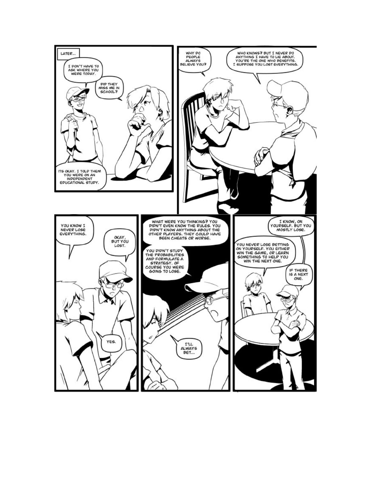
The first graphic chapter introduces Blue, a young risk-taker whose play is getting wild. Blue's mentor warns that taking all chances is reckless, even with a positive edge. Blue argues that when you have an edge you ratchet up the stakes. The mentor sees something darker: self-destruction disguised as aggression. Blue loses everything in the crash. The mentor's verdict: time to go back to school. The core tension of the entire book crystallizes in six pages of manga: edge plus reckless sizing equals ruin. Having a positive expectation is necessary but nowhere near sufficient. Without proper sizing, the edge becomes a weapon aimed at yourself.
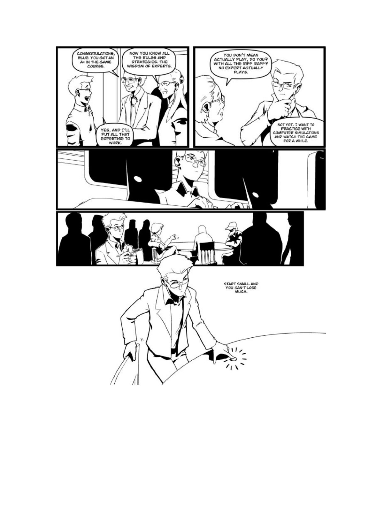
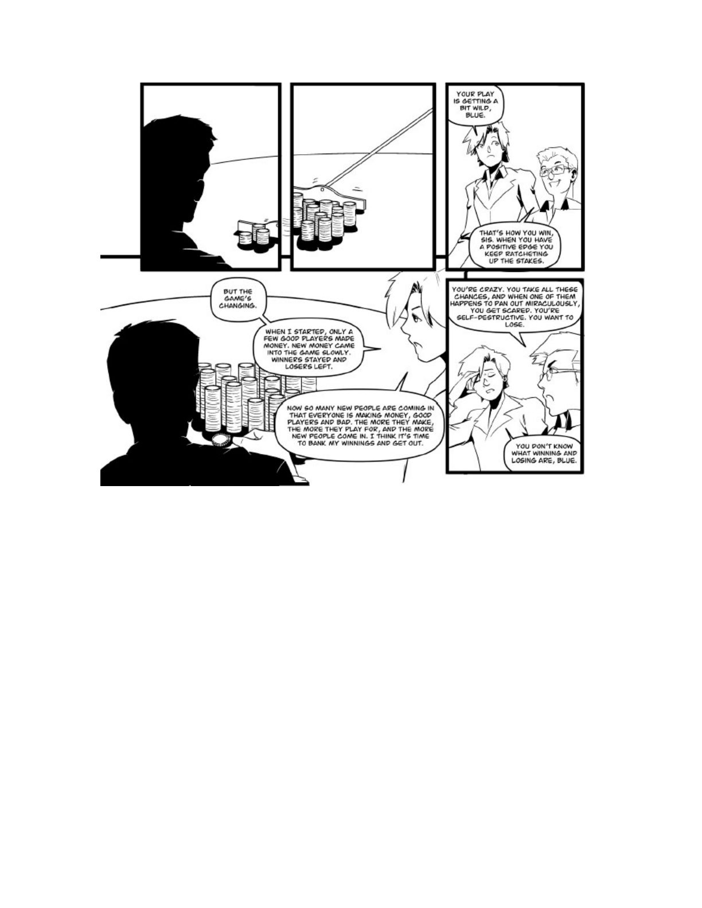
Blaise Pascal's famous wager is not really about God. It is a risk framework. You cannot determine by reason whether God exists, so you must treat it as a bet. Any nonzero probability of infinite upside outweighs finite downside, making belief the dominant strategy. More practically, Pascal prescribed being faithful, honest, humble, grateful, generous, a sincere friend, and truthful. The deeper insight: we often do not know the stakes of the wager. An asset manager faces the same problem: known probabilities for normal returns, zero knowledge of crisis scenarios. Before 1987, the standard approach was to set arbitrary limits on leverage, liquidity, and counterparty quality, then maximize within those limits. Decisions beyond the limits were made by intuition or, as George Soros reportedly said, by how much his back hurt.
Principle I: Risk Duality. Split all risk analysis into two regimes. Normal events have plentiful data and reliable quantitative conclusions. Abnormal events will occur, cannot be quantified, and must be survived and ideally exploited. Quantitative orthodoxy says ignore what you cannot measure. Nassim Taleb says only tail events matter. Brown's position: both matter, and you need the dual framework. His 1982 University of Chicago dissertation on this idea sat ignored until October 19, 1987, when the market fell more than twice its previous single-day record. The true surprise was not the size of the fall but the entire financial system realigning in a way nobody predicted.
Principle II: Valuable Boundary (VaR). One-percent one-day VaR means the portfolio will lose more than VaR on one day in a hundred, assuming normal markets and no position changes. The ninety-nine normal days provide data for optimization. The two or three VaR-break days per year are analyzed separately. VaR must be set before trading begins and never adjusted afterward. Its quality test: VaR breaks must be completely unpredictable. Development stole methods from sports betting point-spread setters and only gained acceptance by risking real money on it.
"VaR is the least you will lose on the worst 1 percent of your days, not the most you can lose."Aaron Brown
Principle III: Risk Ignition. Take the optimal amount of risk and you are guaranteed exponentially growing success. Taking less is not safer; it locks in a worse outcome. A casino illustrates the model: it holds both sides of most bets plus an edge. Gambling activity averages out quickly. Casinos offer widely varying edges but strikingly similar holds, returning about seventy-five percent of losses as comps to keep hold at optimal level. Nassim Taleb's famous casino example: the three biggest losses at a major casino one year were a kidnapped owner's daughter, an employee hiding tax forms, and a tiger mauling a star performer. None were quantifiable gambling risks. Risk ignition works only inside the VaR limit. Once quants learned to set VaR limits and provision for tail events, hedge funds went from producing moderately wealthy owners to billionaires.
Principle IV: Money. Money and risk are inseparable. Inside the money economy, everything is measurable on a common scale. Outside: trust, loyalty, affection, things not purchasable directly. A solo mountain climber faces binary outcomes and sequential correlated risks. A road builder has continuous outcomes and independent subtasks, making the work amenable to risk management and ignition. Money enables ignition through two features: it measures constraints and goals in the same units so partial wins reduce future constraints, and it captures the value of any degree of success rather than forcing binary outcomes.
Principle V: Evolution. Mutation is almost always bad for the individual but optimal for the population. A company surviving a series of crises has evolved into a better-constructed entity. The diverse, stress-tested company is preferable to the safe, untested one. Between two stocks with equal expected cash flows, the volatile company that survived many crises may be superior to the safe, untested one. Its stresses may have bred characteristics that succeed in the future. The untested company is narrowly positioned for past conditions.
Principle VI: Superposition. A company with tight cost controls runs efficiently under prevailing conditions but cracks when small changes hit. A looser company maintains diversity of approaches. Principle VII: Game Theory. The most rational action is often to flip a coin. Knowledge and freedom of action can be harmful. In a truel, the most skillful person often has the least chance of winning. Game theory reverses standard economics: natural risk can be good, and control can be bad. Black Wednesday, 1992: the British government spent twenty-seven billion pounds buying sterling and raised rates five hundred basis points during a recession. George Soros and Stanley Druckenmiller treated it as a heads-I-win-tails-I-break-even bet. The pound crashed to 2.4 deutschmarks and the Treasury lost 3.3 billion pounds. Contrast Paul Volcker, who crushed inflation from 13.5% to 3.2% by raising rates to twenty percent and making markets believe he would go further. Strong action is useless if everyone knows it represents the limit of your strength.
The quants who came together on Wall Street in the 1980s eventually explained the modern concept of probability and reconstructed the global financial system. Their motivation was frank: make more money than any rational person could spend without wearing a tie or being polite to anyone they did not like. They communicated via dial-up bulletin boards, sharing hand-typed data and writing handbooks on opening accounts and avoiding bank tricks. The result was superior to bank data: electronic, integrated, cleansed of errors.
The 1654 correspondence between Blaise Pascal and Pierre Fermat is the earliest tangible evidence of a fundamental shift. Their problem, how to divide stakes in an interrupted game, was a Bayesian degree-of-belief question, not a frequentist one. Probability was created by confusing two concepts: frequency, how often events recur in repeatable experiments, and degree of belief, how strongly to hold a proposition. Frank Knight distinguished risk from uncertainty. Donald Rumsfeld distinguished known unknowns from unknown unknowns. The confusion was never resolved theoretically until the early 1990s, accidentally, on Wall Street.
Brown supported himself playing poker from age fifteen. In the 1970s this meant finding games, collecting winnings, and navigating cheating, robbery, and arrest. The gambling ethic enforced honesty through stakes: you are expected to bet a significant amount on any assertion you make. Those who shoot their mouths off end up disgraced and broke. Statements you do hear can be relied on. The gambling culture fuses frequency and degree of belief through social mores: if you assert a belief, you bet on it, and over many bets your frequency of wins should guarantee profit.
Quants disaffected from academia found intellectual peers among advantage gamblers, specifically blackjack card counters. Advantage gamblers are frequentists: they make money from superior prediction of repeatable experiments. No social skills required, but increasing deception to avoid casino countermeasures. They viewed poker players like Brown as closer to casino owners than to Robin Hoods. At a Reno gathering in 2009, news that a customer shot a pit boss in Atlantic City caused the advantage gambler table to erupt in cheers loud enough to get them kicked out of the restaurant.
Sports betting contributed a second tradition. The point spread was invented to equalize money bet on both sides, not to reflect true probability. Two strategies emerged: estimate true probability from first principles and beat the vigorish, or find which spreads are set too high or too low relative to public demand without estimating true probability. The same distinction as value investing versus momentum investing. About twenty of the hundred rocket scientists arriving in the early 1980s came from gambling backgrounds. Their common touchstone was Edward Thorp's Beat the Dealer and Beat the Market.
Brown identifies four parts of finance. Sales is the dominant visible face: bond salesmen, stockbrokers, investment bankers. They write the official history. The job requires interpersonal skill, not intelligence. Finance people are the vast majority: accountants, bank tellers, loan officers. Information hoarding was the profit source from 1900 to 1970: banks monopolized creditworthiness data and operating results. Mortgage spread was three percent net revenue in the 1960s, under one percent today. Real finance is the small group that actually makes bets: trading floors and hedge funds. This sector was revolutionized after 1982 by the rocket scientists.
"We still call it Wall Street but no one who was actually on Wall Street in 1980 would recognize any part of it — and none of it is located on physical Wall Street." Aaron Brown
Conventional wisdom says risk decisions are driven by subjective preference. John Kelly's 1956 result overturned this: there is a calculable optimal amount of risk that always does best in the long run. Beyond Kelly, more risk only increases the probability of bad outcomes. Below Kelly, you are guaranteed to do worse. The illustration is devastating. Face one hundred even-money bets, sixty of which you will win. An adversary chooses the order. The best fixed bet is twenty-four dollars and leaves you with $1,480. Anything at or above twenty-five dollars allows the adversary to front-load your losses and wipe you out. But betting twenty percent of your current bankroll each time is order-independent. You never go broke. Each matched loss-win pair reduces your bankroll by bet-percent squared. Forty such pairs cut $1,000 to $195. Twenty unmatched wins then grow that to $7,490. At ten percent, you end with $4,501. At thirty percent, $4,370. Twenty percent is the unique optimum. No strategy does significantly better.
Harry Markowitz, University of Chicago graduate student in the 1950s, asked why investors do not put all their money in the best stock. His answer: diversify to lower risk, accepting lower expected return. Kelly's answer: putting everything in one stock is overbetting because you lose access to all future positive-expected-value opportunities. Not about other simultaneous stocks but about future betting opportunities. Harry focuses on diversification because of simultaneous opportunities. Kelly focuses on bet sizing because of future opportunities. Both are valid. Mainstream finance developed Harry's ideas. The quants developed Kelly's. MPT works for large liquid portfolios held one to thirty-six months. Kelly is required for most hedge fund contexts.
The commodity futures table makes the case concrete. Cocoa averaged 4.9% annual return over forty years, implying 196% cumulative, but the actual total return was only 10.6%. Sugar averaged 5.1% but lost 62%. The equal-weight portfolio of all seven commodities returned 34.4%, better than every individual commodity despite a lower average return of 1.8%. The explanation is volatility drag: up twenty percent then down twenty percent leaves you at minus four percent, not zero. The approximation: total return equals average return minus standard deviation squared divided by two. Even with perfect hindsight, risk still matters. Corn lost 91.7% at full long but returns 66.4% at optimal sizing of negative 70.2%, meaning short. Sugar's minus 62% becomes plus 41.1% merely by keeping two thirds in cash. Sizing matters more than direction.
Markowitz tells you which assets to hold but not how much leverage to take. The same Sharpe ratio whether ten percent in the portfolio or ten-to-one leveraged. But outcomes differ massively: ten percent allocation yields $1,132; ten-to-one leverage yields $2. Optimal Kelly leverage for this portfolio: 3.322 to 1 . Combined: equal-weight $1,344, Markowitz-optimal $2,924, Kelly-optimal $8,145.
"The most important insight is that even with perfect foresight, risk still matters."Aaron Brown
Investment Growth Theory analyzes opportunities one at a time. Most attractive plus lowest risk gets the largest allocation. No gain from two stocks in the same industry. Far more valuable: different time scales, different kinds of risk. A typical IGT portfolio holds a half-dozen to several dozen assets, not hundreds. No two IGT investors hold the same portfolio. IGT explains the endowment effect as rational: you value owned assets differently because your portfolio allocation changes their risk profile. IGT also explains the dividend puzzle and the buy-low-sell-high preference. In a bubble or crash, MPT leaves index investors passive while momentum and fundamental investors battle. Momentum wins sometimes and pushes the market to economically unjustified levels.
For equities, typical pairwise correlation is about 0.16. You cannot get portfolio standard deviation below roughly forty percent of the average stock's standard deviation no matter how many stocks you add. Picking twenty random stocks gets ninety percent of the diversification benefit. Picking stocks with low or negative correlations gets full benefit with just four to eight stocks. The pre-MPT professional portfolio of eight to forty stocks was rational, not ignorant. Brown launched eRaider.com around 2000 to exploit IGT principles: a seven-stock portfolio with low mutual correlations and activist shareholder catalysts. Co-conceived with Martin Stoller of Northwestern. The fund opened March 10, 2000, the day NASDAQ hit its all-time high of 5,048.62. Over the next two and a half years, NASDAQ fell to 1,114.11. The portfolio outperformed but the venture failed. Martin was diagnosed with a brain tumor. The key lesson, from Phil Goldstein: no one wants to pay for activism.
Things that do not change do not cause risk. Things that move at steady rates are manageable with deterministic rules. Exponentials can go from too small to notice to too big to survive before you can react. The trick is to find exponential stuff when it is still slow. By the time it gets fast, it is too late. Linear and polynomial growth give warning. Exponential does not. Risk management implication: linear risks can be monitored reactively, but exponential risks must be identified before they accelerate.
"The trick is to find the exponential stuff when it's still slow. By the time it gets fast, it's too late."Aaron Brown
HIV probably infected its first human between 1884 and 1924. The first confirmed U.S. death was in 1968, but the disease was not identified until 1981. That year: 122 U.S. deaths, appearing to quadruple annually. With a ten-year latency period, projections pointed to everyone dead by 2001. By the time it was noticed, the growth rate was already slowing. Deaths peaked around 1995. If action had been delayed until 1989, the peak could have exceeded one million per year instead of fifty thousand.
Betting on an exponential produces asymmetric payoffs: if right, gains accelerate continuously; if wrong about the direction, losses decelerate over time. Betting against an exponential reverses the asymmetry dangerously. The Internet in 1990 was clearly exponential. Regardless of your probability assessment, the risk characteristics of being long were far better than being short. One hundred bets on exponentials can make money winning one and losing ninety-nine if the one win is uncapped. One hundred bets against exponentials can lose money winning ninety-nine and losing one.
The Tulpenwoede of 1600s Holland, popularized by Charles Mackay , was not what the textbooks say. People were not paying high prices for single flowers. They were paying for rights to a new variety, like movie distribution rights, not a ticket. Tulip bulbs generate offspring at about thirty percent per year from healthy bulbs. The valuable coloration comes from mosaic virus infection, which makes infected bulbs reproduce slowly. A first flower worth one hundred dollars, depreciating twenty percent per year, with supply tripling in the first six years then growing thirty percent, is worth over two hundred thousand dollars. The famous horror stories were seventeenth-century advertising designed to dramatize a variety's value for illiterate audiences. The Dutch flower business today is larger in real per-capita terms than in 1610.
The February 3, 1637 crash occurred in midwinter with all bulbs in frozen ground. Expensive bulbs fell sixteen percent. Cheap bulbs fell ninety-five percent. Mackay's widespread ruin was myth: government propaganda, no increase in bankruptcies, losses mainly among upper-middle-class merchants who had both bought and sold. A two-percent change in depreciation rate changes new-variety value by sixty-six percent. For near-commodity bulbs, the same change produces a 568% price swing. Brown's revisionist argument: tulip futures were a substitute currency in a capital-starved economy. Tulip bulbs served as store of value, medium of exchange, and portable wealth. Usury was technically illegal, and rising tulip prices were a backdoor interest payment.
The comic chapter on money explores how economic behavior shifts once money exists. Production gives way to arbitrage: find what is cheap, convert to something expensive. Markets emerge as self-organizing systems. The Egyptian counterfactual asks what would have happened if pharaohs had used competitive bidding instead of slave labor. Innovative businesses would have sprung up, techniques would have spread globally. Instead, technology vanished and monuments decayed. Paper money, wherever introduced, produced an unprecedented steady rise in wages. Continental dollars depreciated about fifty percent per year but stimulated an economy starved of currency by British rulers. Derivatives improved on paper by giving price signals for all commodities at all future times. Everywhere derivatives were introduced, the rate of wage increase exploded.
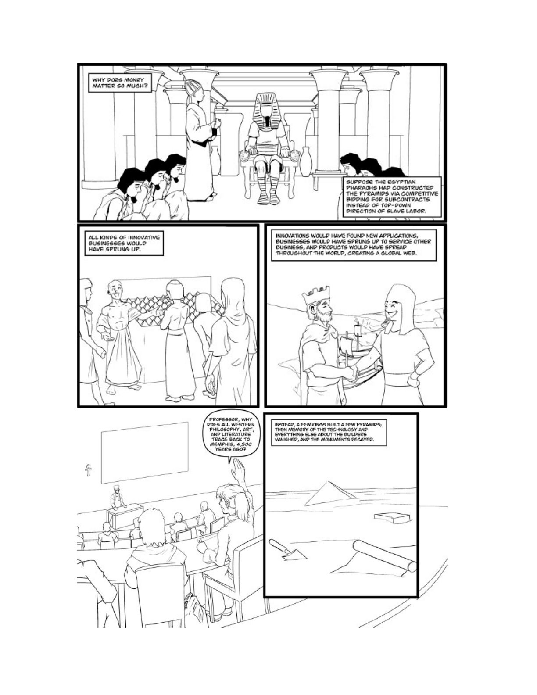
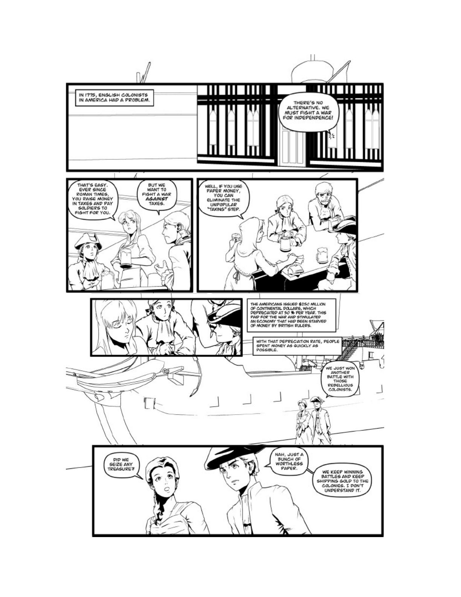
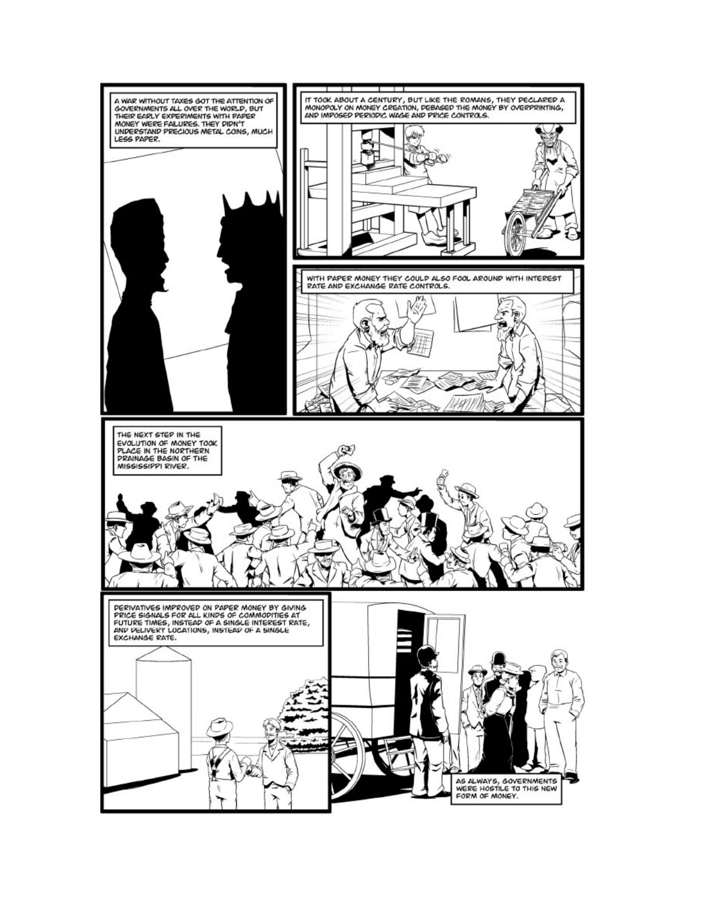
Daniel Kahneman, Jack Knetsch, and Richard Thaler ran the classic endowment experiment: coffee mugs with a school logo, six dollars at the campus store. Buyers offered an average of $2.87. Sellers demanded an average of $7.12. Same mug, radically different valuations based solely on ownership. This loss aversion evolved to reduce intraspecies fighting and allow investment in territory. Incumbents value a resource more than intruders, so intruders know fighting an incumbent is costly. Fewer fights mean more investment. Risk is deeply embedded in property: if outcomes were certain, the stronger party would simply take.
Human exchange falls into four types arranged along two axes: reciprocal versus nonreciprocal, and symmetric versus asymmetric. Equal-value exchange and involuntary exchange focus on goods themselves. Gifts and gambling prefer luxury and symbolic goods. Token money emerged as exchanges became impersonal, seashells being the most common form. Commodity money followed: nonperishable, portable, divisible, universally desired. Precious metals dominated. Gold served international trade, silver served merchants, copper served retail. Murray Gell-Mann encountered the persistence of old monies in 1955 when the Archbishop of Canterbury's secretary insisted on payment in guineas, 142 years after the last guinea was minted.
Without good money, households must make almost everything themselves. More importantly, without good money there is far less innovation because risk cannot be managed. Money lets constraints and goals both become measurable, enabling risk management and exponential growth. Romans taxed and paid rather than ordering, which worked while loot lasted. Their fatal flaw: not understanding that money only works when it circulates. Their response, debasing currency and imposing wage and price controls, is a mistake every government has repeated.
A bank needs only the ability to make loans. No gold reserves, no equity capital, no marble columns. It lends paper, borrowers exchange paper for goods, sell products for paper, and repay with interest. Most important credit webs are informal and invisible to economic statistics. They power more innovation and lift more people to financial security than official bank loans, which mostly serve people who already have money.
"Banks are institutions that lend money to people who don't need it." Aaron Brown
Paper money is not a substitute for precious metal. It is a fundamentally different thing. Rules requiring paper to relate to gold are designed to destroy true paper money and turn it into a token. Paper creates richer price signals: each bank's paper has its own interest rate, discount rate, and exchange rate versus other paper monies. A village economy has a hard economy of precious metal serving aristocracy alongside a soft economy of paper funding new ideas. Successful innovation makes the paper good, creating a virtuous cycle. Andrew Dexter exploited this brilliantly, controlling two banks six hundred miles apart, printing a hundred thousand dollars from each, spending the notes in between. He built the Boston Exchange Coffee House, a two-hundred-room hotel among the tallest buildings in the New World. He also founded Montgomery, Alabama, reserving a plot for a state capitol before Alabama was a state. His scheme failed from lack of transparency, not lack of capital.
Brown's personal golden rule: if it is worth fighting about, share it. Three types exist in the political taxonomy: those who will share and will fight run things for everyone else; those who will not share and will fight are libertarians who should be left alone; those who will not share and will not fight are free riders who must be made to share. Government should stick to minimizing fighting. Universal public education is the cheapest violence-reduction tool ever invented. Governments should stay entirely out of the money business: no monopoly on currency, no borrowing, no economic regulation.
Efficient markets was not ivory-tower orthodoxy imposed on practitioners. Until the 1950s, almost no one believed markets were efficient. It was obvious that professionals knew more than amateurs. Then academics started checking. Professional investors did no better than random selection after fees. They bought the same things simultaneously, pushing prices up, and sold simultaneously, pushing them down. Annual market-beaters showed no persistence. The logical point is simple: the sum of all investors' returns before fees equals the market return. If someone makes more, someone must make less. Fees charged by active management far exceed the maximum possible aggregate excess profit.
Efficient markets does not mean rational investors. It studies price movements, not psychology. Prices can be efficient even if all investors are ignorant and irrational. Efficient markets does not mean prices are always right. Market price is right on average, which is much weaker but still strong. The dangerous error: treating average price as exactly right and building further computations on it. Two unbalanced coins, ten percent and ninety percent heads. The market correctly prices a single flip at fifty cents. But a compound bet on two heads priced at twenty-five cents is wrong. Actual probability is forty-one percent. The company contract example: stock rises twenty-five cents on a major announcement, implying $25 million value. Counterparty offers $30 million breakup fee. If the market is exactly right, take the fee. But if the other party offers thirty million, it suggests the contract is worth more.
Two exploitation strategies exist. Card counters treat markets as inefficient but in equilibrium: prices are wrong but you can transact freely, so compute the correct price and trade against it. Sports bettors treat markets as efficient but out of equilibrium: prices are right given the structure, but transactions are not happening at the price, so accommodate others' needs. The dual-class share arbitrage illustrates: buy 100,000 Class B shares at forty-nine dollars, short 100,000 Class A at fifty-one. Instant $200,000 profit. But if the spread widens, mark-to-market losses and margin calls can force liquidation at maximum loss. Card counters view it as pure arbitrage to hold forever. Sports bettors call it a convergence trade and study when it narrows.
Managed futures originated in commodity futures, the best-known momentum strategy. Momentum is easiest to explain as disequilibrium: slow information flow into prices. The gasoline crack spread example: a cold snap shifts refineries to heating oil, spring gasoline stocks fall, prices rise until Memorial Day. If the net direction over the last month has been up, more good news than bad means net positive information not yet fully incorporated. The momentum signal is valid. Calibration per market is critical: what lookback period, what other signals help.
Sharpe ratio equals return minus risk-free rate divided by standard deviation. For a Kelly investor, long-term growth approximates Sharpe squared. Sharpe one means about one hundred percent annual growth. Strategies above Sharpe one are self-limiting. Full Kelly betting is highly sensitive to fat-tail losses: adding one loss that is five times the bet drops the optimal bet from twenty percent to 11.6% and final wealth by more than half. Computing the correct bet if your model is perfect and then cutting it in half is not adequate risk management.
October 19, 1987: the market fell about twenty-five percent in one day. All quants were wiped out. The crash itself was not the surprise. First-generation quants were prepared for large declines. What got them: a simultaneous host of other changes, not the market move itself. By October 1987, quants had been on Wall Street six or seven years, going from unknown outsiders to recognized players. Post-crash came a witch hunt that mostly landed on portfolio insurance quants. Brown was excited. This was the game they had come to play. A Yale presentation one month later already contained half the ideas that would be developed over the next five years.
"We were neither the first nor the last to confuse brains and a bull market." Aaron Brown
A futures contract is a mutual promise to buy or sell a standardized amount and quality of a commodity at a specified future time, place, and price. Three features define it: standardization, a clearinghouse that creates two separate contracts so each party deals with the clearing entity rather than each other, and daily mark-to-market settlement that limits default risk to one day's price move. Margin posted on a five-thousand-dollar contract might be five hundred dollars, protecting against wheat moving more than ten cents per bushel in a day.
The standard textbook story about farmers hedging by selling futures and millers buying them is completely false. Farmers rarely participated. When they did, they were more likely to buy crops than sell. Millers use futures but generally sell crops, not buy. The miller's real motivation is financing, not hedging. A futures contract eliminates money from the transaction: the miller gets wheat now and promises to deliver wheat later, with no inflation or deflation risk on the loan. The point of a futures contract is the mark-to-market payments, not delivery, the same way a bond's point is interest payments, not principal repayment.
"The futures contract is essentially a financing arrangement to the miller, not a risk reduction tool."Aaron Brown
Derivatives improve on paper money by providing a rate for every commodity, every economic interest, and every future delivery period. Spread trades are derivative money in action: buy March wheat in Chicago and sell March wheat in Kansas City and you have lent transportation services. Buy number-one wheat and sell number-two wheat and you have borrowed cleaning services. Starting a business under derivative money does not require a bank. Identify your inputs and outputs, enter derivative contracts for both, and receive upfront cash if the future product value exceeds input cost. The energy sector was the first pure derivative business: an entrepreneur enters a ten-year tolling swap, receives oil supplies, contracts to sell electricity, gets cash upfront, builds the plant, and owns it free and clear after ten years.
Derivatives vastly improve all three functions of money. As a clearing mechanism, the clearinghouse keeps all circulation on the books, transactions always balance by rule, and fraud requires corrupting the clearinghouse. As a store of value, each user specifies exactly which future goods to hedge or bet on. As a numeraire, derivatives let each participant construct one matching their specific economic interests. When your numeraire is your net economic product, you have no risk. Robert Shiller envisions derivatives for all major life decisions: going to medical school, you sell half the cohort-average income of similar entrants. Human capital exceeds all other assets in total value. Without derivatives, it remains sterile.
Anne and Anais illustrate how derivatives create value from nothing: a USD/EUR forward at $1.40. Both sides have positive expected value because they use different numeraires and value the same outcome differently. Derivatives more than double the value of underlying assets. The zero-sum charge is wrong for the same reason that calling banks zero-sum is wrong: every dollar of interest paid by a borrower equals a dollar received by a depositor, yet banks add enormous value.
Clearinghouse failures are more common and more damaging than the industry admits. The claim that no clearinghouse has ever gone broke is misleading: they survive by bankrupting their customers. The Paris Sugar Bourse in 1905 set settlement prices in members' own favor. Tino De Angelis in 1962 floated soybean oil on seawater as collateral. The New York Produce Exchange declared that contracts would settle at the old high price, converting exchange losses to customer losses, then had the decency to go out of business. Lehman Brothers, in its last filing before failure, had twenty billion in cash against $263 billion in short-term liabilities. Cash was irrelevant. The entire dealer system runs on short-term repo financing.
"Cash, in the sense of paper money issued by the government, is meaningless. The cash Lehman held belonged to others and could not have paid its liabilities anyway." Aaron Brown
The origin story of Cold, a quantitative trader born in Biysk, a Soviet science town where mercury froze at minus thirty-eight degrees Celsius. Son of a Russian Army sergeant who discovers computers and math. Joins the army, gets posted to Soviet Staff HQ in Afghanistan, pitches the war as an information war needing computers. The computers fail. Moves to Gosplan, the Soviet central planning agency: the economy is failing from rigid top-down planning. Same pitch, same outcome. The Soviet Union falls. Cold goes to Wall Street, joins an investment bank, and discovers the internal war between investment bankers who want traders to blow up and get fired and traders who want to spin off into hedge funds. Cold's revelation: money is not dollars or gold or numbers on a balance sheet. Money is created by computer valuation of derivatives. The search for trading profit is an information search. He claims to have a program that makes trading profit without any trading. The computers fail again.
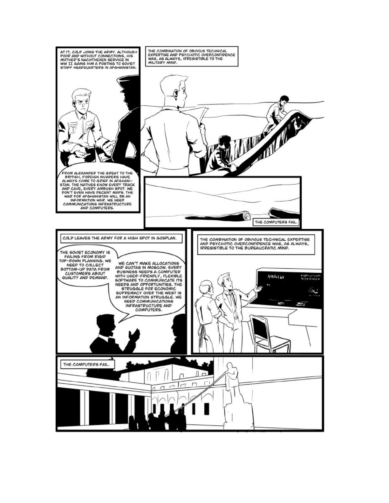
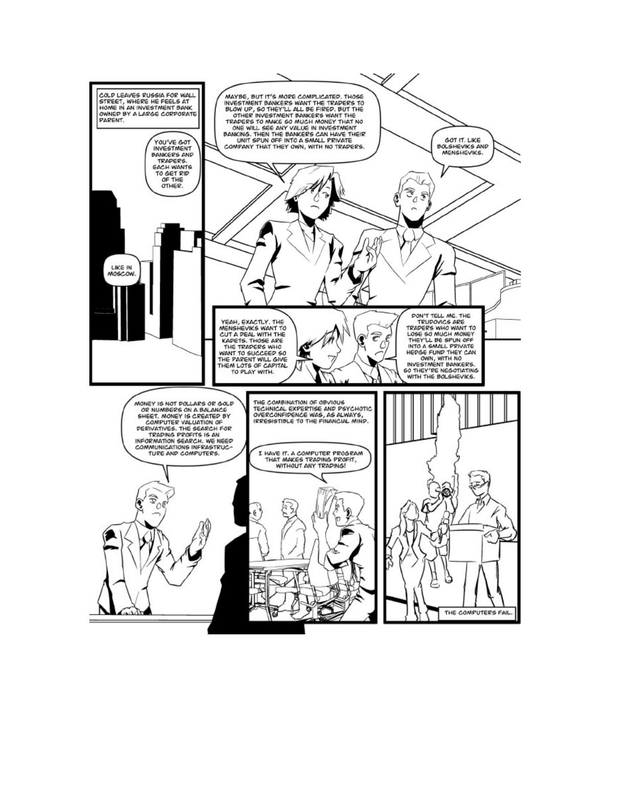
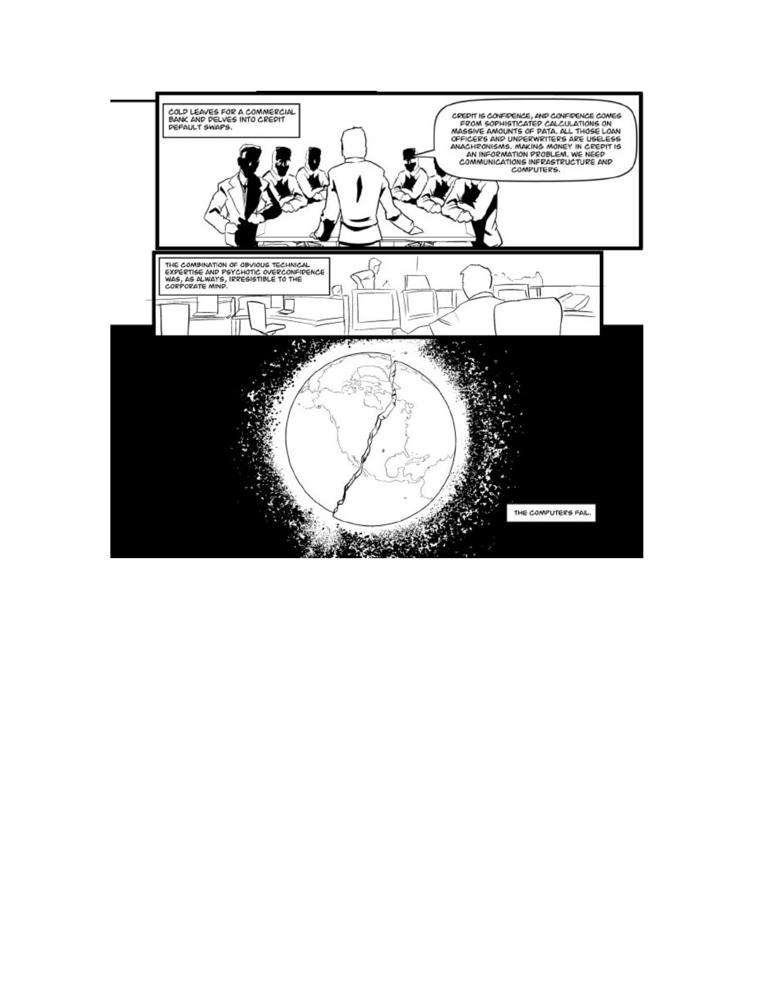
Financial risk management is quantitative with specific techniques, not vague worry. Almost all financial risk managers use VaR as their primary component. The CRO of a large institution is usually a bank executive, not a technical expert. Best practice separates risk management from trading. The front-office risk manager sits inside each revenue-producing unit but reports through the CRO, not the business head. This independence emerged over the past fifteen years. Recruits come from the business, like coaches drawn from former players.
The traditional job is watching traders for signs of too much or too little risk. Traders consistently under their limits are investigated too: seats are valuable, and traders must take risk. Putting trades in a drawer, meaning unreported trades, is grounds for immediate dismissal. Risk managers listen to traders explain trades to judge behavior, not the trade itself. Talking their book, marshaling every possible argument, signals uncertainty and triggers a veto. An oddly weak case may mean the trader unconsciously wants a veto. Good traders never tell you their real reasons because they do not know them consciously, but good instincts can be trusted.
Quants introduced systematic record-keeping and discovered that even the best traders bet more when wrong than when right. Jacob Brown's study at the world's largest online betting site found that ninety percent of bettors gambled randomly and lost. The ten percent with predictive edge would almost all have done better betting constant size. When they bet more than average, they lost more often. Some turned winning prediction percentages into net financial losses. Three quant camps settled onto trading desks in the late 1980s: frequentists overmanaged and treated traders like algorithms; Bayesians excelled at analysis but could not communicate to traders; poker players, Brown's camp, were best at getting traders to make right bets through influence and psychological framing.
Brown invented the term middle office in the early 1990s at JPMorgan. The core problem: information flowed only one way, front to back office. Back office absorbed all errors and learned nothing. Investment bank internal numbers were a joke. Commercial bank numbers were merely bad. JPMorgan was the exception: a commercial bank aggressive in trading. Brown spent the early 1990s teaching risk management there and considers it his biggest contribution. Two information loops define the middle office: front to middle to back, and back to middle to front. The daily process: issue VaRs for every unit, test predictions against actual P&L with a two-to- three-day lag, tweak algorithms.
Brown always checks numbers and finds they are frequently wrong. Manual number entry has a one-to-five percent error rate. Simple calculations run five to twenty percent. Adjustable-rate mortgage interest computations had over fifty percent error rates in the early days. The Monroe Bond Calculator in the 1980s produced errors of hundreds of dollars per ten-million-dollar trade. Back-office and salespeople did not care because it was not their money. To know whether you should rely on a number from a complex system, do not ask about the inputs or the processes. Ask what it is checked against. If checked against nothing, it is worthless.
"To know whether you should rely on a number from a complex system, don't ask about the inputs or the processes; ask what it is checked against."Aaron Brown
Fischer Black and Brown estimated informally that about ninety-five percent of all work is wasted. People miss this because they evaluate only their own level. A truck driver paid three hundred dollars for a delivery considers work done. But some goods are defective, some will not sell, some will be moved back. Only five percent of the goods might represent actual value created. Accounting rules treat every expenditure as value creation. Dietrich Dorner's experiments show that humans cannot manage even simple virtual systems with complete information. In a meat locker temperature experiment, almost everyone fails because they cannot wait five minutes for feedback and then wildly overshoot corrections. In virtual village management, almost everyone creates environmental disaster in a few virtual years.
"Given that humans demonstrably cannot manage simple virtual systems with complete information and power... you would have to be a complete idiot to expect them to manage complex real systems." Aaron Brown, paraphrasing Dietrich Dorner
VaR's primary contribution is subjecting risk information to objective validation. Brown's test for job applicants: name any computation you have done professionally for which you have objective evidence the result was accurate. Most quantitative professionals cannot answer satisfactorily. Pre-1970, book value closely tracked stock price. Today they are basically unrelated. Half of bankruptcies produce near-zero creditor recovery. Accounting numbers have long since lost any connection to tangible economic reality. Brown played poker in Washington with members of Congress, cabinet members, generals, and senior diplomats. Smart, honest, hard-working, but none had data to know if what they were doing worked. None were interested in falsification.
"I think anything bigger than a small town can be run efficiently only using quantitative methods, and those methods require constant, rigorous validation and openness to all challenge."Aaron Brown
An allegory told as a graphic novel. Var proposes building a fence around the village, gathering systematic data on dangers, eliminating known threats. The result: a network of prosperous villages. The fence does not stop all dangers, but people develop skill and courage to handle the unexpected. Then Baltoo, a false god, arrives and demands nonsense ritual: measure the distance to the fence, multiply by three, bury that many gold rocks. When Baltoo fails, the survivors do not return to Var but follow the next false god, Balthree . The moral: real risk management builds genuine capability. False risk gods replace it with ritual that provides no protection. The parable maps directly onto the VaR debate: regulators demanding ritual compliance (measure the number, multiply by three, hold that much capital) versus genuine risk management that builds adaptive capability.
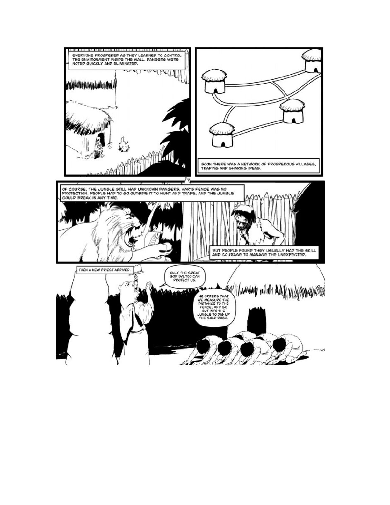
By October 22, 1987, four days after the crash, the financial landscape had changed dramatically, but only quants noticed. Fischer Black quipped that markets look a lot less efficient from the banks of the Hudson than from the banks of the Charles. The option smile appeared overnight: plotting option price over model price against exercise price produces a smile shape, with out-of-the-money options on both ends expensive and at-the-money cheap. Pre-crash, practitioners knew tail options were overpriced versus the Black-Scholes- Merton model but attributed it to unsophisticated investors overpaying for crash protection. After October 22, it flipped: tail options should sell for more because they reflect real risk. The shift happened simultaneously in foreign exchange, interest rates, and commodities, markets that had no disruption, proving it was an ideological shift, not a local market event.
The mortgage market broke simultaneously. Early 1980s CMO creation generated about four percent annual profit. Pre-crash, all government mortgage bonds were priced similarly regardless of CMO desirability. Between October 19 and 22, the government mortgage security curve snapped to a perfect fit of interest rate modeler computations. It eliminated most mortgage arbitrage and compressed CMO issuance spreads permanently. Unlike standard arbitrage, which corrects slowly, these arbitrages had persisted and grown as more quants piled in, then all fixed at once.
Brown's dissertation at the University of Chicago under Professor Craig Ainsley explored conditional heteroskedasticity: time series where volatility is unknown and changing. Rob Engle presented his frequentist approach. Craig attacked him, then pulled Brown aside and said Engle was way ahead of them and they had to drop everything to publish first. Engle published first and won the Nobel Prize for ARCH. Three camps diverged after the crash. Frequentists started small hedge funds with precise capital requirements, layering cheap safe capital over expensive risky capital. Bayesians believed capital and market-value risk management were misguided, arguing that a ten-year bank loan does not lose value when rates rise if held to maturity. Nonparametric value traders, Brown's camp, used daily marked-to-market value with tail distributions filled by long-term history and hypothetical scenarios.
The birth of VaR came from a practical crisis. JPMorgan, Bankers Trust, and Citibank could not aggregate risk across trading desks. Accounting was useless because most exposure was in derivatives, invisible to accountants. Senior management feared all desks were unknowingly on the same side of a bet. The value camp had the only universally comparable number: daily P&L on opening positions. The capital camp had the right metric: maximum loss at specified probability over specified horizon. The synthesis was VaR. Every day, estimate the VaR; verify that losses exceed it on about five percent of days, not more and not less.
"Nobody invented VaR. It was a hybrid stitched together out of existing parts in order to get a quick answer to a question quants didn't think was important." Aaron Brown
Computing VaR correctly was extremely difficult. Historical simulation, the most popular regulatory method, never passes a back-test. On the S&P 500 from 1930, it produces 314 breaks versus the expected 199. Twenty-three of those come the day after another break: a 7.3% conditional probability when it should be one percent. Average VaR on break days is lower than average VaR overall, meaning the method signals low risk precisely when risk is highest. Parametric Gaussian methods are even worse: 1,298 breaks versus the expected 199. The only approach that works: when a VaR break occurs, double the estimate for the next day; each non-break day, multiply the scaling factor by 0.94. This produces 188 breaks, randomly distributed, with average VaR higher on break days than normal days. VaR must react violently to unusual events and settle moderately quickly afterward.
The graphic novel chapter dramatizes dual-class stock arbitrage through a student challenging a professor. Warren Bailey of Cornell documented dual-class arbitrage in 1988. The student asks: if it is real, why has it not been arbitraged away? The professor admits he does not gamble. A mentor figure's backstory unfolds: a U.S. intelligence agent's son in North Vietnam, sailing from Da Nang in a storm, playing dead when Thai pirates attacked, sneaking into the United States illegally, opening a restaurant, leasing a Chicago Board of Trade seat, and exceeding trading limits. The professor published but was not cited and was eventually fired. The chapter illustrates the gap between academic knowledge of arbitrage and the willingness to risk personal capital to exploit it.
Firms that took risk management seriously all survived the 2007 crisis. Among less-serious firms, total slackers did no worse than average achievers. Middle-office risk management only helps if done really well. Regulator-imposed minimum compliance is useless. JPMorgan ran below minimum risk from 2000 to 2004, then at minimum from 2005 to 2007. Morgan Stanley was the next domino after Lehman and Merrill. Any more risk would have been fatal. The two firms were a hairbreadth apart in practice. The crisis was not caused by any one firm failing. It was systemic.
Pre-crisis stress tests included a credit event about forty percent as bad as what actually occurred. They flagged danger to AIG, Fannie Mae, Freddie Mac, and mortgage insurers. They did not show significant danger to major commercial or investment banks. As things worsened, firms cut exposures via BBB spread trades: buy protection on BBB-rated securities, fund by selling protection on super-senior AAA securities designed to survive even a Depression repeat. In cash flow terms this worked. What nearly killed firms was the leverage required: one billion of BBB protection funded by ten billion of super-senior protection sold, creating eleven billion in notional derivatives for a one-billion-dollar hedge. At the depths, no one cared about position quality. Only leverage. Many firms went broke holding positions that would eventually have paid off.
"You can't make the financial system safe by making each institution safe; you can make it safe only by making the system robust to individual institution failure." Aaron Brown
Three unspeakable truths about risk management. First: risk managers should make sure firms fail. Fail often, fail fast, fail cheap. Fewer soldiers died in battle than were massacred fleeing battles fought too long after any hope of victory was gone. Firms exist to serve customers. If they do not, they should be replaced. Trying to run a firm to zero probability of failure guarantees a firm that does no good in life, lives too long, and does too much bad in death. Too many firms failed to fail in 2004 to 2007 and clogged up the drain in 2008.
"There should be a lot of financial firm failures. They should fail fast and often. The only safe system is one that allows failure." Aaron Brown
Second: there is good stuff beyond the VaR limit. Superposition businesses, designed to work under multiple contradictory scenarios, exploit uncertainty itself. Brown and Martin Stoller created eRaider.com during the dot-com bubble: used bubble-era stock options to recruit thirty-six top business experts, built a twenty-million- dollar business for about one million. The idea failed, but the mechanism worked. Volatility gave them a twenty-million-dollar business for one million. Risk managers encourage superposition ideas by giving permission to fail, the most underappreciated power of the risk manager.
Third: risk managers create risk. Large organizations naturally standardize everything, increasing efficiency but also correlation, creating fragility. Standardization makes you predictable, exploitable by competitors, resistant to change, and catastrophic when a single system fails. Adding deliberate randomness at the micro level improves macro predictability. The benefit of added randomness can be quantified and balanced against the cost savings of standardization. It is not anarchy but deliberate calibration.
"It is smart risk management to take fliers sometimes, even if they are completely at random."Aaron Brown
A visual history of risk tracing from Hammurabi's Code, which imposed the same punishments for theft, fraud, and accidental loss with no distinction between intentional and random harm, through Jakob Bernoulli's 1713 proof of the Law of Large Numbers, to Bruno de Finetti's 1937 coherent answer to non-repeatable events, through Abraham Wald's decision theory, to all three traditions coming together on Wall Street in 1987. The Phoenicians exempted bottomry loans from usury laws if the ship was lost, possibly the earliest risk-adjusted return. Bernoulli's frequentist limit: to be ninety-nine percent sure a frequency is between twenty-four and twenty-six percent, you must repeat the experiment 12,354 times.
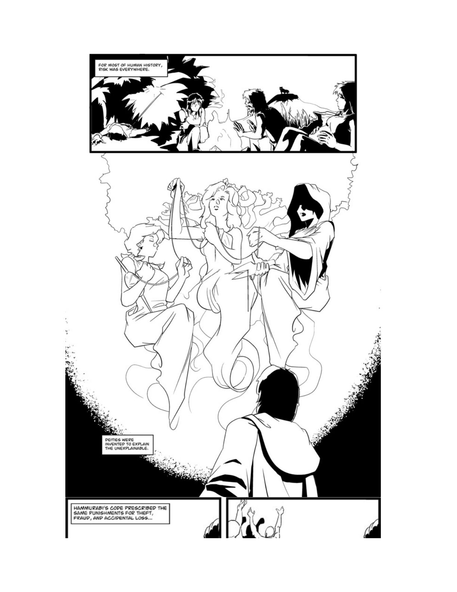
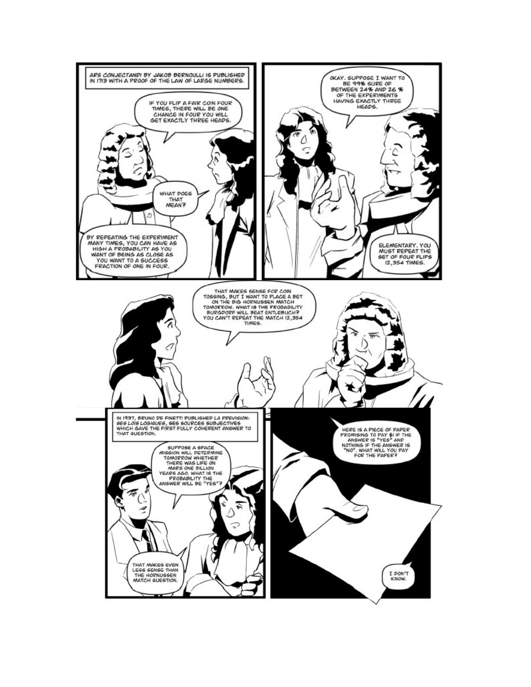
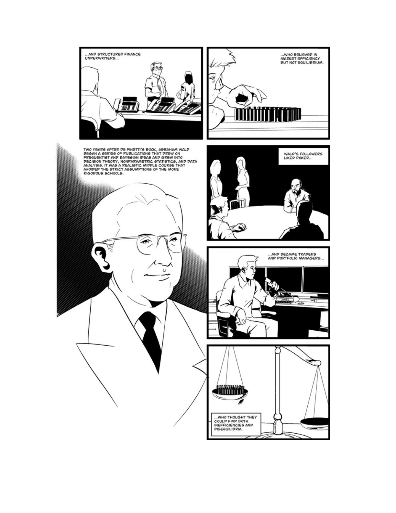
The 1654 Fermat-Pascal correspondence solved the interrupted game problem. Two gamblers playing to seven wins, one has six and the other has five. How to divide the stake? Fermat's combinatorial solution: play out all four possible continuations. The first player wins three of four, so three-fourths. Pascal's legalistic solution: start from tied equals half, the leader already owns half, the next game contests the other half, so three-fourths. Pascal's joy at both methods yielding the same answer was the revolution. Neither mentions probability. Fermat is pure frequency. Pascal is pure belief.
Black-Scholes-Merton connects them. A stock at seventy dollars, worth one hundred or fifty tomorrow. An option to buy at eighty. The option equals forty shares minus two thousand dollars, giving eight dollars per share. BSM is not a pricing model. It is a conversion tool, like solving yield-to-maturity from a bond price. From option prices across strikes and expiries, you can extract the exact distribution a risk-neutral investor places on the stock. This risk-neutral distribution is a degree of belief from prices. The actual distribution is a frequency from history. It is the first theory to relate degree of belief to frequency while keeping them distinct.
Change of numeraire can transform a hard probability problem into one answerable from observation. Kraitchik's envelope paradox: two envelopes with X and 2X. The apparent paradox that you should always switch resolves when you recognize that X as numeraire changes when you switch. Pascal's wager used the same trick. Brown's test for pollsters: would you bet at the odds you claim? If a pollster says sixty percent Democrat, would you put fifty-nine dollars to forty-one? You need about twenty thousand predictions for statistical power, must prespecify conditions under which the model is invalid, and must back-test by checking whether a betting book would have been profitable.
Frequentist statistics has no logical bridge from frequency to belief without moneylike terms. Bayesian statistics insists on one universal numeraire, often wrong. Statistics cannot settle arguments unless people agree on a numeraire first. Post-World War II, fields that developed a middle layer of statisticians between theorists and data collectors failed completely. Economics is the prime example. Finance was the bastard offshoot that succeeded: huge monetary rewards to people who could bridge theory and data, and survivors figured it out.
In 1980, investment banks were small private partnerships. Commercial banks had nineteenth-century balance sheets. Glass-Steagall separated them. Hedge funds were obscure. The U.S. economy roughly doubled in real terms from 1980 to 2007. Financial businesses quadrupled. Financial employment grew only slightly faster than population, but composition shifted: lower-wage service employees fell, higher-wage decision-makers increased dramatically. Finance contracted geographically as neighborhood bankers and insurance agents were displaced by global institutions in New York and London but expanded culturally as consciousness of finance penetrated homes, television, and computers.
The standard quant process for financial trading crystallized during this period. Estimate ninety-five percent one-day VaR every trading day. Compare actual P&L against the prediction. Test for correct number of VaR breaks, independent in time and level. Collect data within the VaR limit for analysis. Investigate trans-VaR days. Estimate the left tail distribution. Analyze trans-VaR scenarios for leverage, liquidity, counterparty credit, model risk, and fraud. Compute optimal Kelly bet from good within-VaR data plus the hypothetical tail. The VaR back-test is the only objectively validated part of the process. Without it, you cannot know you are doing the right thing.
Wall Street did not grow because people saved more. Global savings rates declined. The key shift was defined-benefit to defined-contribution plans. The real source: quants created capital by redefining its basis from cash and gold to risk, effectively doubling available capital worldwide. True capital creation requires derivatives and securitization. The social value of finance is not making markets more efficient. Financial trading more likely pushes markets away from efficiency. The real value is profit: in honest finance, both sides of a transaction benefit and the intermediary profits, creating genuine value. Quants entered a system where most financial profits were taxes on real activities, protected by information hoarding and crony regulation.
Basel I in 1988 required internationally active banks to hold capital of at least eight percent of assets. Key flaw: no capital required for government bonds. The incentive was to pick the riskiest assets within each bucket: short-term senior loans to blue chips and long-term subordinated loans to near-bankrupt firms both carried hundred percent risk weight, but the latter paid much higher interest. Basel II, developed from 1994 to 2005, set capital at three times the ninety-nine percent ten-day VaR. VaR as a risk measure is theoretically crazy, determined by the center of the distribution and ignoring tails, requiring thirty thousand trading days for reliability. But no better measure existed, and it could be back-tested.
Securitization is disintermediation: removing institutions, linking providers and users directly. A traditional savings bank consumes half the mortgage interest before paying depositors. Mortgage-backed securities pools provide national diversification, standardized for liquid trading, with borrowers paying less and investors earning more. The root cause of every securitization disaster: failure to sell the entire deal in true arm's-length transactions. When margins compressed, structurers jammed unsalable pieces into managed accounts, lent buyers money, or held internally with fake hedges. It always led to disaster.
The biggest single reason things fell apart: risk takers were systematically displaced by risk avoiders. Wall Street was built to be run by people with deep risk-taking experience. As it grew far bigger than imagined, people with no such background flooded in to get rich safely. Risk avoiders' tell: better credentials, fewer failures, better dressed, better interpersonal skills, and they all agreed with each other. Risk avoiders love steadily growing revenue, which you cannot get from genuine risk-taking but can fake by forcing exponential growth on ideas past their limit. Risk takers must be honest to survive. Risk avoiders think that as long as everyone is calm, the ship cannot sink. The first quants to leave were the card-counting frequentists, who started hedge funds and kept them small. Then the poker players left. By the early 2000s, it was hard to find an original vintage quant on Wall Street.
The final chapter is partly graphic novel, with a cast representing risk-taking archetypes. Red Blood is the original risk taker: serial failures, ignoring established wisdom. Blue Blood is the credentialed risk avoider who takes over as CEO. Hot Blood is the most profitable trader, aggressive and over limit. Cold Blood has a five-year track record of steady growth with no losses, the risk avoider's ideal. Blood Sucker is the risk manager hired to impose professional standards. Thin Blood has impeccable credentials and saw it all coming but nobody listened. Blue takes over, hires Cold for steady profits. When earnings targets are missed, Cold proposes adjusting model parameters after the quarter closes. Blood Sucker warns of a death spiral: earnings disappointment leads to stock decline leads to confidence loss leads to rising cost of capital leads to departures leads to worse earnings. The board sides with Blue. The firm fails.
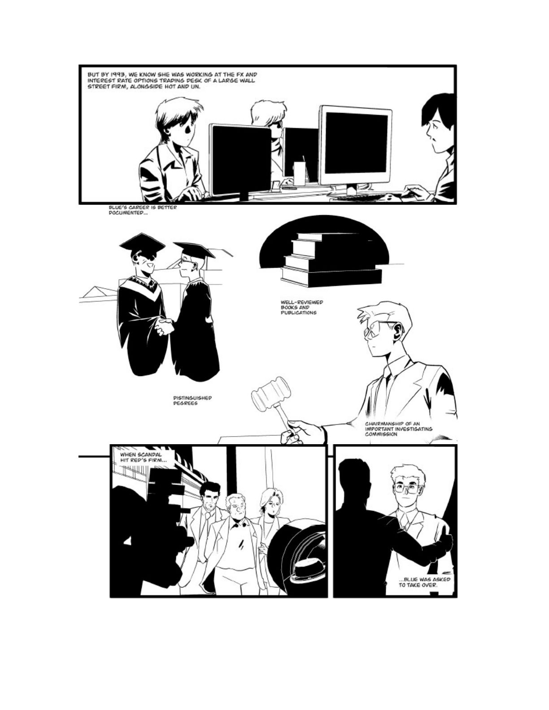
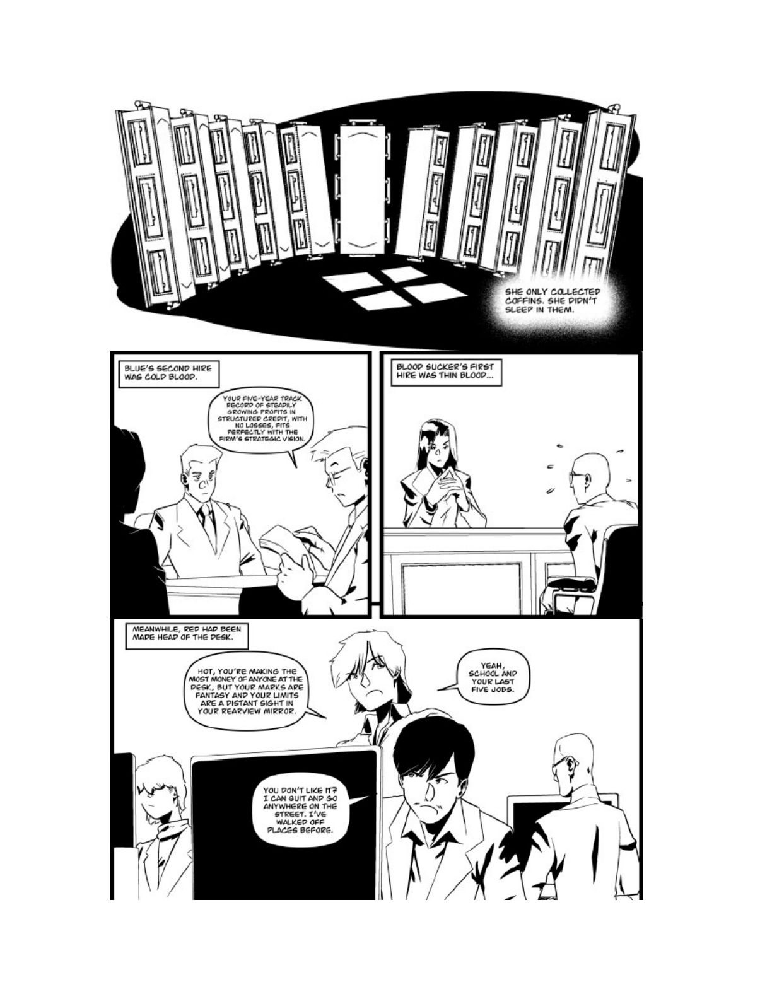
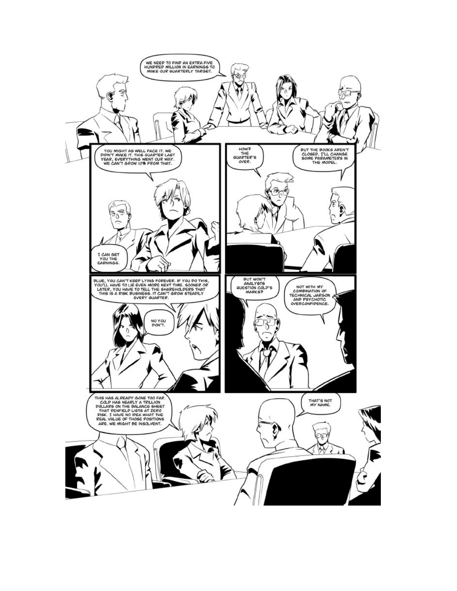
Blame is assigned after failure to everyone except the one who deserves credit. Blue did everything according to best expert advice. Blood Sucker imposed the highest professional standards. Thin Blood had impeccable credentials and claims foresight. Cold Blood possessed extraordinary vision and says it would have worked but for irrational market events. The true blame falls on Red Blood: long history of serial failures and ignoring established wisdom. Failed to start slowly and grow exponentially. Planned for success when she launched and failed fast when she failed. The risk taker, not the risk avoiders who destroyed the system from the inside.
Large diversified regulated financial institutions are fatally flawed. All either failed or would have failed without massive government intervention. Governments cannot afford a second round of bailouts. Simple leverage, holding a volatile stock at two-to-one, can be safer than holding a calm stock unleveraged. What banks actually did was use leverage to offset risk through hedging. But in a severe credit crunch and liquidity crisis, even good leverage could kill. Counterparty risk, clearinghouse failures, and basis risk all became lethal.
Subprime mortgages were not inherently bad. No-doc loans actually had less fraud than conventional loans, where prime borrowers systematically lied about down payments, double-counted assets, and claimed fantasy bonuses. Conventional subprime performed better than expected. The real problem: NINJA loans, no income, no job, no assets, combining multiple underwriting flaws with no compensating strengths. Fraudulent prime loans were more dangerous: losing a hundred percent on a pool expected to have 0.1% losses is a bigger shock than losing thirty percent on a pool expected to have ten percent losses.
The postmortem question is not whether the risk was good or bad but whether it was the right size. A toy example: ten, twenty, thirty, and forty percent returns over four years, then minus fifty in year five. Overall twenty percent profit. At half size: 19.5%. At twice size: wiped out. Optimal sizing: seventy-seven percent of actual risk taken, yielding twenty-three percent return. The system should have sized slightly smaller. A lower-risk financial system would have produced both smaller losses and smaller gains. Civilian employment rose about four percent from 1999 to the 2007 peak, then fell 5.9% by December 2009. To justify risk reduction, you must believe you can cut more than fifty percent of losses while losing less than thirty percent of gains.
"In the end, there is no magic to risk management. Risk managers cannot prevent bad things from happening... Nevertheless, it is a revolutionary advance in human organization."Aaron Brown
The commodity futures table proves that sizing matters more than being right about direction. Corn lost 91.7% at full long but returns 66.4% at optimal short sizing. Sugar's minus 62% becomes plus 41% by keeping two-thirds in cash. For any trader, the lesson is clear: obsessing over whether to go long or short is secondary to computing the right position size. Full Kelly is too aggressive. Half Kelly is often the practical sweet spot.
A position that gains twenty percent then loses twenty percent is not flat but down four percent. Over decades, this drag can consume enormous returns. The approximation, total return equals average return minus half the variance, should be tattooed on every trader's forearm. High-volatility instruments need to deliver significantly higher average returns just to break even against the drag.
Being long an exponential trend has fundamentally different risk characteristics than being short one. Long: if right, gains accelerate; if wrong, losses decelerate. Short: if wrong, losses accelerate. This asymmetry explains why trend-following strategies survive: most bets lose small, but the winners are uncapped. Shorting exponential growth is the most dangerous trade in finance.
Two legitimate approaches to markets. Card counters treat markets as inefficient but in equilibrium: prices are wrong, compute the right price, trade against the error. Sports bettors treat markets as efficient but out of equilibrium: prices are right given the current structure, accommodate others' needs. Understanding which game you are playing determines your edge and your risk. Card counters fear people; sports bettors fear market forces.
Setting a daily VaR before trading and never adjusting it afterward is the equivalent of a stop-loss that you actually respect. Most traders revise their risk tolerance midday based on whether they are winning or losing. The VaR discipline says: your risk estimate was either correct or not. If it breaks, double your risk estimate for tomorrow and investigate. Never rationalize the break away.
Firms and trading desks run by people who want steady, predictable growth will systematically force exponential growth on ideas past their limit. They fake smooth returns by adjusting model parameters, marking positions favorably, or suppressing volatility through leverage that explodes in crises. A trading desk that never has a down month is more dangerous than one that loses regularly, because the no-loss record almost certainly hides risk rather than managing it.
Risk has both upside and downside, is measurable, and is under human control. Danger is one-sided negative, often unmeasurable, from nature. Treating risk as danger and avoiding it is the thin-blooded approach that guarantees mediocrity.
There is a mathematically demonstrable optimal bet size. Taking less than optimal is not safer but guarantees worse outcomes. Taking more risks ruin. Most people take too few bets at too-large sizes instead of many bets at correct sizes.
VaR separates the domain where statistics work (normal days, plentiful data) from the domain where they do not (tail events, unknowable outcomes). Its value is in drawing the line, not in the number itself.
Barter to precious metals (freed the world from civilization rise-fall cycles) to paper (steadily rising wages) to derivatives (golden age of innovation). Each phase enabled new forms of risk management and exponential growth. Derivatives are currently the most important form of money.
The textbook story of farmers hedging is completely false. Futures are borrowing mechanisms that eliminate money from transactions. Their point is the mark-to-market payments, not delivery, the same way a bond's point is interest, not principal repayment.
About a hundred rebels from gambling and academic backgrounds arrived in the early 1980s and between 1982 and 1992 rebuilt the global financial system on quantitative principles. Most observers saw quants as a consequence of change. They were the cause.
The 2007 crisis was not caused by excessive risk-taking. Risk takers were systematically displaced by credentialed risk avoiders who demanded predictable growth, eviscerated VaR by putting it into controlled systems, and forced exponential growth on ideas past their limit.
The only safe system is one that allows failure. Too many firms failed to fail in 2004 to 2007 and clogged the drain in 2008. Failure is not the problem. Slow, expensive failure is.
Risk managers should actively add artificial randomness to organizations. Standardization increases efficiency but also correlation, creating fragility. Diversity through deliberate randomness makes systems harder to exploit, more adaptable, and more robust.
Fischer Black and Brown's informal estimate. Accounting rules treat every expenditure as value creation. Only five percent of goods might represent actual value. The useful fraction is as high as it is only because of finance, social infrastructure, and technology.
Conventional belief: the Dutch tulip craze of the 1600s was history's first speculative bubble, proving that crowds are mad. Brown's counter: high prices for rare tulip varieties were rational given their exponential reproduction rate and virus-induced scarcity. The horror stories were advertising, not journalism. February 1637 was a currency crisis, not a speculative collapse. The Dutch flower business today is larger in real per-capita terms than in 1610.
Conventional belief: hold hundreds of stocks for maximum diversification. Counter: with typical equity correlations of 0.16, twenty random stocks capture ninety percent of diversification benefit. Picking four to eight uncorrelated stocks captures all of it. The pre-MPT portfolio of eight to forty stocks was rational. Massive diversification via index funds removes investor oversight and feeds bubbles.
Conventional belief: irresponsible subprime lending caused the 2008 crisis. Counter: conventional subprime performed better than expected. No-doc loans had less fraud than prime loans. The real culprits were NINJA loans combining all flaws at once and fraudulent prime loans that produced bigger shocks when they defaulted.
Conventional belief: reducing risk makes systems safer. Counter: taking less than optimal risk does not make you safer; it locks in a guaranteed worse outcome (Kelly). A lower-risk financial system would have produced smaller losses and smaller gains. The two are inseparable. To justify risk reduction, you must demonstrate cutting more than fifty percent of losses while losing less than thirty percent of gains.
Conventional belief: markets are either efficient or they are not. Counter: markets can be efficient at cosmic scale (Earth is smoother than a billiard ball) yet full of exploitable features at human scale (mountains and oceans). The social value of finance is not making markets efficient but creating genuine profit through honest intermediation.
Conventional belief: cash on the balance sheet means safety. Counter: Lehman's twenty billion in cash was irrelevant against $263 billion in short-term liabilities. The entire dealer system runs on repo financing. What matters is the ability to make mark-to-market payments and deliver repo assets. Cash is an accounting artifact, not a buffer.
"What I do isn't rocket science. Most of it is trivially simple and the rest is meticulous care rather than brilliance. But to be historically accurate, we're stuck with the term."Aaron Brown
"VaR is the least you will lose on the worst 1 percent of your days, not the most you can lose."Aaron Brown
"The most important insight is that even with perfect foresight, risk still matters."Aaron Brown
"We still call it Wall Street but no one who was actually on Wall Street in 1980 would recognize any part of it — and none of it is located on physical Wall Street." Aaron Brown
"We were neither the first nor the last to confuse brains and a bull market." Aaron Brown
"Cash, in the sense of paper money issued by the government, is meaningless." Aaron Brown
"You can't make the financial system safe by making each institution safe; you can make it safe only by making the system robust to individual institution failure." Aaron Brown
"There should be a lot of financial firm failures. They should fail fast and often. The only safe system is one that allows failure." Aaron Brown
"It is smart risk management to take fliers sometimes, even if they are completely at random."Aaron Brown
"Given that humans demonstrably cannot manage simple virtual systems with complete information and power... you would have to be a complete idiot to expect them to manage complex real systems." Aaron Brown
"Nobody invented VaR. It was a hybrid stitched together out of existing parts in order to get a quick answer to a question quants didn't think was important." Aaron Brown
"I think anything bigger than a small town can be run efficiently only using quantitative methods, and those methods require constant, rigorous validation and openness to all challenge."Aaron Brown
"The trick is to find the exponential stuff when it's still slow. By the time it gets fast, it's too late."Aaron Brown
"In the end, there is no magic to risk management. Risk managers cannot prevent bad things from happening... Nevertheless, it is a revolutionary advance in human organization."Aaron Brown
| Reference | Concept Illustrated |
|---|---|
| Abraham Wald's Bombers | Survivorship bias: armor where there are no holes, because those planes never returned |
| NASCAR Fatal Crashes | Converting danger into risk through deliberate rule manipulation |
| Ford Pinto Memorandum | The ethical boundary between risk management and putting a price on human life |
| Casino Tiger Mauling | The three biggest losses are never the quantifiable ones (Taleb's casino example) |
| Bolsheviks & Mensheviks | Investment bankers vs. traders as rival factions, each wanting to eliminate the other |
| VaR of the Jungle | Real risk management (the fence) vs. regulatory ritual (Baltoo's gold rocks) |
| Eisenhower's Reserves | Game theory at theater scale: maintaining resources in reserve creates strategic ambiguity |
| Volcker vs. Bank of England | Strong action is useless if everyone knows it represents the limit of your strength |
| Egyptian Pharaohs | Command economies as dead-end innovation: no wages, no feedback loop, no spin-off industries |
| Digital Camera Inside Film Company | How quants rebuilt Wall Street from the inside without anyone noticing |
| Robin Hood vs. Sheriff of Nottingham | Advantage gamblers vs. poker players: who is really stealing from whom? |
| Diogenes the Cynic | Searching for honest quants willing to bet on their conclusions, like searching for an honest man |
| Mountain Climber vs. Road Builder | Binary outcomes vs. continuous outcomes as the distinction that makes risk manageable |
| Andrew Dexter's Banks | Creative money creation through geographic arbitrage and social proof |
| Dorner's Meat Locker | Humans cannot manage even simple systems: they overshoot, oscillate, and refuse to wait for feedback |
| The Blood Types (Red, Blue, Hot, Cold, Thin) | Risk-taking archetypes that define institutional politics and predict failure modes |
I: Risk Duality (split normal from abnormal). II: Valuable Boundary (VaR as the dividing line). III: Risk Ignition (Kelly-optimal sizing creates exponential growth). IV: Money (enables risk measurement and optimization). V: Evolution (stress-testing through crises creates superior entities). VI: Superposition (maintaining multiple states increases robustness). VII: Game Theory (randomness and strategic ambiguity as tools).
Positive expectation on every bet. Independent bets. Proper sizing: never get taken out of the game, but bet very big when the right gambles come along.
Three simultaneous tests must pass: (1) correct number of breaks in total, (2) breaks randomly distributed in time with no clustering, (3) average VaR on break days higher than average VaR overall. Historical simulation fails all three. Gaussian parametric fails catastrophically. Only a scaling-factor approach, doubling VaR after each break and decaying by 0.94 daily, passes all three.
Sales (visible face, writes the history). Finance people (accountants, tellers, the vast majority). Information hoarding (profit from data monopoly, pre-1970). Real finance (actual bets, revolutionized by quants).
Define clear predictions with a clear numeraire. Estimate the trusted range. Validate rigorously. Analyze within-range data with standard statistics and outside-range data with judgment. Build a plan optimizing growth across both. Allow public betting against your estimates. This is Brown's synthesis of the frequentist-Bayesian split, claimed as the first satisfying answer to the problem begun by Pascal and Fermat in 1654.
Four practical requirements: build an automated VaR system that posts every night even when data is missing. Track down the source of a casually cited statistic to discover how poorly defined it is. Conduct real research in non-coin-flip risk models like evolutionary biology or quantum physics. Take personal financial risk with a thousand dollars in prediction markets every quarter and double it or start over.
| Work | Author | Relevance |
|---|---|---|
| Beat the Dealer | Edward Thorp | Common touchstone for all rocket scientists arriving on Wall Street |
| Beat the Market | Edward Thorp | Invented most standard hedge fund strategies in the 1960s |
| Fortune's Formula | William Poundstone | History of the Kelly criterion and its applications to finance |
| Fooled by Randomness | Nassim Taleb | Only tail events matter (Brown disagrees: both normal and tail matter) |
| Extraordinary Popular Delusions | Charles Mackay | Source of the tulip mania myth that Brown systematically debunks |
| The Road to Serfdom | Friedrich Hayek | Quoted on impartiality requiring coin-flip decisions |
| Exploring General Equilibrium | Fischer Black | "A great finance book almost nobody read" - Brown lobbied publishers for years to reissue it |
| Risk Intelligence | Dylan Evans | Contains Jacob Brown's study on betting behavior at online financial sites |
| Bringing Down the House | Ben Mezrich | Advantage gambling and card counting culture |
| A Demon of Our Own Design | Richard Bookstaber | Systemic risk and financial complexity |
| Expected Returns | Antti Ilmanen | Comprehensive quantitative approach to return expectations across asset classes |
| The (Mis)behavior of Markets | Benoit Mandelbrot | Fat tails and fractal market behavior |
| More Money Than God | Sebastian Mallaby | History of hedge funds from quant perspective |
| The Big Short | Michael Lewis | "Most fun to read, also accurate" on the 2007-2009 crisis |
| Ars Conjectandi | Jakob Bernoulli | 1713 proof of the Law of Large Numbers, foundation of frequentist probability |
Brown and Martin Stoller built one of the most intellectually ambitious investment experiments of the late 1990s. They recruited thirty-six top experts using stock options printed on real banknote stock for five thousand dollars, creating certificates accepted like thousand-dollar bills. The team included finance professors, accounting professors, an SEC commissioner, industry experts, and journalists. They accumulated five-percent stakes in seven companies before SEC filing. It took four years to get SEC approval. The fund opened March 10, 2000, the exact day NASDAQ peaked. Martin's father, Phil Stoller, was a famous securities swindler, subject of Murray Teigh Bloom's Rogues to Riches. Martin himself was diagnosed with a brain tumor. The portfolio outperformed in relative terms but the activist model failed because shareholders sold on any price bounce the activism produced.
Brown played poker in Washington with members of Congress, cabinet members, generals, and senior diplomats. He describes the city as the most cosmopolitan poker town in the 1970s, with players from all over the world. His assessment of the powerful: smart, honest, hard-working, but none had data to know if what they were doing worked, and none were interested in falsification. The experience convinced him that large institutions cannot be run without quantitative methods subjected to constant rigorous validation. The Ford Administration's gas rationing plan collapsed when the Department of Agriculture and Ford Motor Company could not agree on whether seventy-five percent or twenty-five percent of tractors ran on diesel, using different definitions of the same term.
The Reno 2009 incident captures the culture: news that a customer shot a pit boss in Atlantic City caused the advantage gambler table to erupt in raucous cheers, loud enough to get them kicked out. These were blackjack card counters who saw themselves as undercover Robin Hoods stealing back from casinos what casinos had stolen from everyone. They viewed poker players like Brown as closer to casino owners, the sheriff of Nottingham rather than Robin Hood. The pre-pre-opening line process for NFL betting had three stages: insiders on Sunday, quant bettors on Monday, public on Tuesday. Brown's specialty was distinguishing line changes driven by new information from those driven by public sentiment, the equivalent of distinguishing value investing from momentum investing.
In the 1980s, the standard bond calculator produced errors on the order of hundreds of dollars per ten-million-dollar trade. Back- office staff and salespeople did not care because it was not their money. Adjustable-rate mortgage interest computations had over fifty percent error rates in the early days. Early payoff principal and interest calculations were more often wrong than right. Brown's first job in 1974 involved tennis player rankings compiled from illegible score sheets with ambiguous names and impossible results. The CEO sent the first page to clients without any caveats. His second job counting election ballots discovered the company had counted only two hundred non-randomly sampled ballots, not the originals, and still managed to count them wrong.
Quants' original compensation insight: align interests through out-of-the-money indexed stock options that pay only if the company significantly outperforms peers, with five-year vesting and five-year holding periods, spread deep into the organizational chart. Post-crisis regulators imposed the opposite: compensation withheld unless the firm survives three years. Brown's boat builder analogy: pay a builder only if the boat does not sink and she builds a shaky boat you never take out in bad weather. Pay only if it sinks and she builds one you can take through storms with great safety equipment. The government put everyone on the first boat.
Aaron Brown is one of the original Wall Street rocket scientists, part of the roughly one hundred quantitative risk takers who arrived on Wall Street in the early 1980s and rebuilt the global financial system. He supported himself playing poker from age fifteen, studied under W. V. O. Quine at Harvard, and was influenced by Fischer Black, Fred Mosteller, Brad Efron, and John Tukey. He invented the term "middle office" while at JPMorgan in the early 1990s and spent a career bridging gambling culture, academic statistics, and Wall Street risk-taking.
Brown describes himself as not taking huge risks but taking lots of risks. He was a member of the nonparametric, data-analyst camp among the three quant traditions: the poker players, as opposed to the card-counting frequentists or the sports-betting Bayesians. He has issued daily quantitative predictions for twenty years that no one has successfully bet against. Eric Kim illustrated the book's manga chapters, creating recurring characters whose stories dramatize the theoretical arguments across multiple graphic chapters.
Red-Blooded Risk is the rare insider account of the quant revolution written by someone who was there from the beginning, not as an observer but as a participant. Most books about Wall Street quants are written by journalists or academics who treat the revolution as a story to narrate. Brown treats it as a philosophy to explain. The seven principles of risk management, the Kelly-versus-Markowitz synthesis, the money evolution thesis, and the VaR back-testing protocol are not summaries of other people's work but the actual intellectual framework developed by the people who built modern finance.
The book's most important argument may be its most counterintuitive: the 2007 financial crisis was not caused by excessive risk-taking but by the systematic displacement of genuine risk takers by credentialed risk avoiders who demanded predictable growth. Risk avoiders eviscerated VaR, forced exponential growth on exhausted strategies, and created the appearance of safety that concealed catastrophic fragility. The lesson extends far beyond finance: any organization that prizes smooth performance over honest risk assessment is building a system designed to fail spectacularly. The only safe system is one that allows failure.